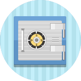

신뢰받는 기업, 정의로운 기업을 만들기 위해 SK플래닛은 윤리적 책임을 다하고 있습니다.
- 윤리경영은 기업이 결제적, 법률적 책임을 준수하는 것과 더불어 사회적 통념으로 요구되는 윤리적 기준을 기업의 의사결정과 행동에 반영하는
것입니다. 또한, 건전한 기업시민의 역할이라고 할 수 있는
자선적 책임(Philanthropic Responsibility)
을 수행하는 것도 광의의 윤리경영이라 할 수 있습니다.
- 
- 경제적 책임
- 지속적 이윤 창출로 기업의 영속성 유지
- 법적 책임
- 국내외 제반 법규 준수
- 윤리적 책임
- 사회적 통념에 의해 형성된 윤리적 기준준수
- 자선적 책임
- 건전한 기업 시민의 역할 수행
Source By Archie B. Carroll
- 최근 국가 경제 및 사회 문화 전반에 기업이 미치는 영향력이 증대되고 있으며 이러한 Paradigm의 변화는 다양한 이해관계자들로부터 기업의 사회적 역할과 책임에 대한요구를 증대시키고 있습니다.
- 또한 세계화가 심화되고 국가간 거래가 활발해지면서 윤리문제가 국제거래의 주요과제로 부각되고 있습니다. UN, ISO 등에서는 윤리경영을 비롯한 사회적 책임을 Global Standard화 하려는 움직임을 강화하고 있습니다.이러한 경영환경의 변화로 인해 기존의 경영 관행으로는 기업의생존 자체가 불확실하게 되었으며, 윤리경영이 기업의 경쟁력과 지속성을 유지하기 위해 필수적이라는 인식이 점차 확산되고 있습니다. 대내의 경영환경의 변화와 시대적 요구에 적극적으로 대응하고 다양한 이해관계자와의 가치와 행복을 창출하기 위하여 우리의 사고와 행동가치를국제적인 수준으로 높이고 ‘윤리경영’을 체계적으로 추진할 필요가 있습니다.
- SK플래닛은 이러한 시대적 소명을 인식하고 윤리경영을 적극적으로 실천하여 사회로부터 신뢰 받고 지속 발전하는 World Leader로 거듭 날 수 있도록 최선을 다하겠습니다.